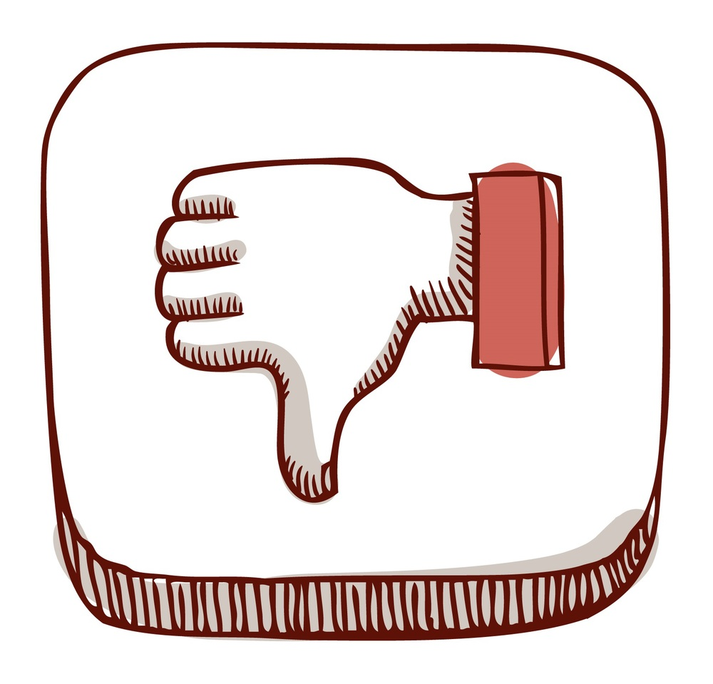

Преимущества и недостатки ноутбуков, нетбуков и карманных компьютеров
Главная страница
Виды
Использование в образовании
Что выбрать?
О себе
Преимущества и недостатки карманных персональных компьютеров
Преимущества
Компактность и портативность
Долгое время работы от батареи
Многофункциональность (можно использовать для работы, развлечений, навигации)
Поддержка различных приложений и сервисов
Легкость в использовании для повседневных задач

Недостатки
Ограниченная производительность по сравнению с полноценными ПК
Маленький экран может быть неудобен для длительного использования
Ограниченные возможности ввода данных (неудобная клавиатура)
Меньше возможностей для расширения и подключения периферийных устройств
Чувствительность к повреждениям из-за компактного дизайна
Назад